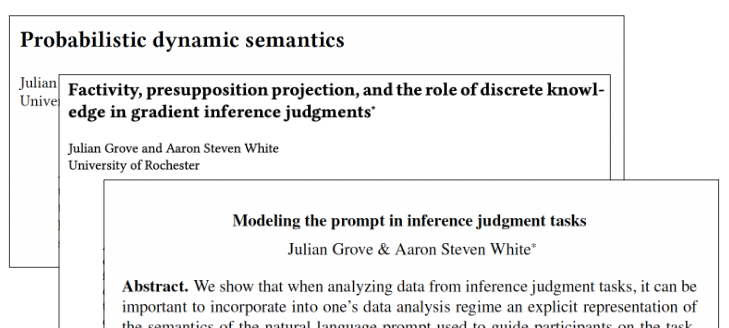
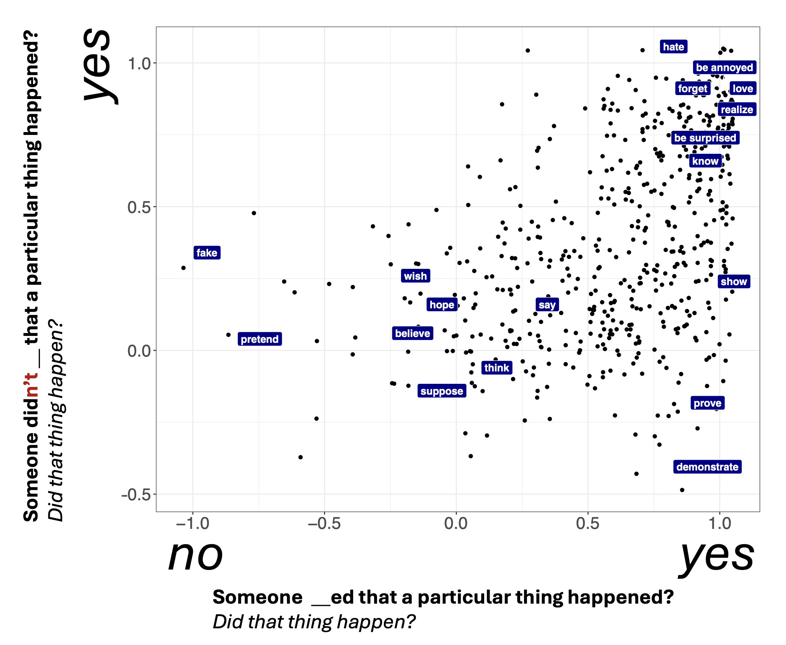
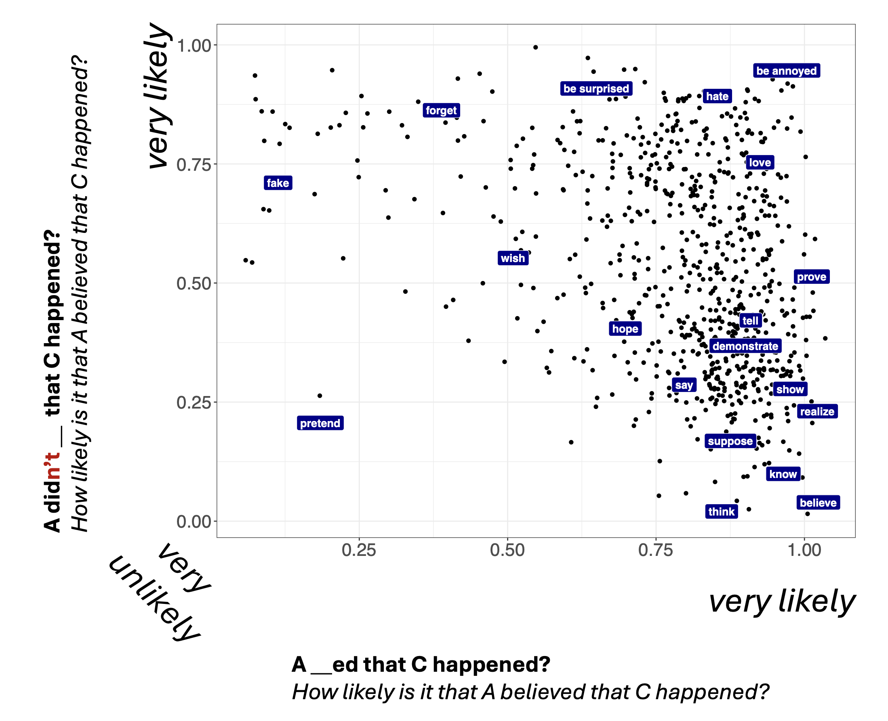
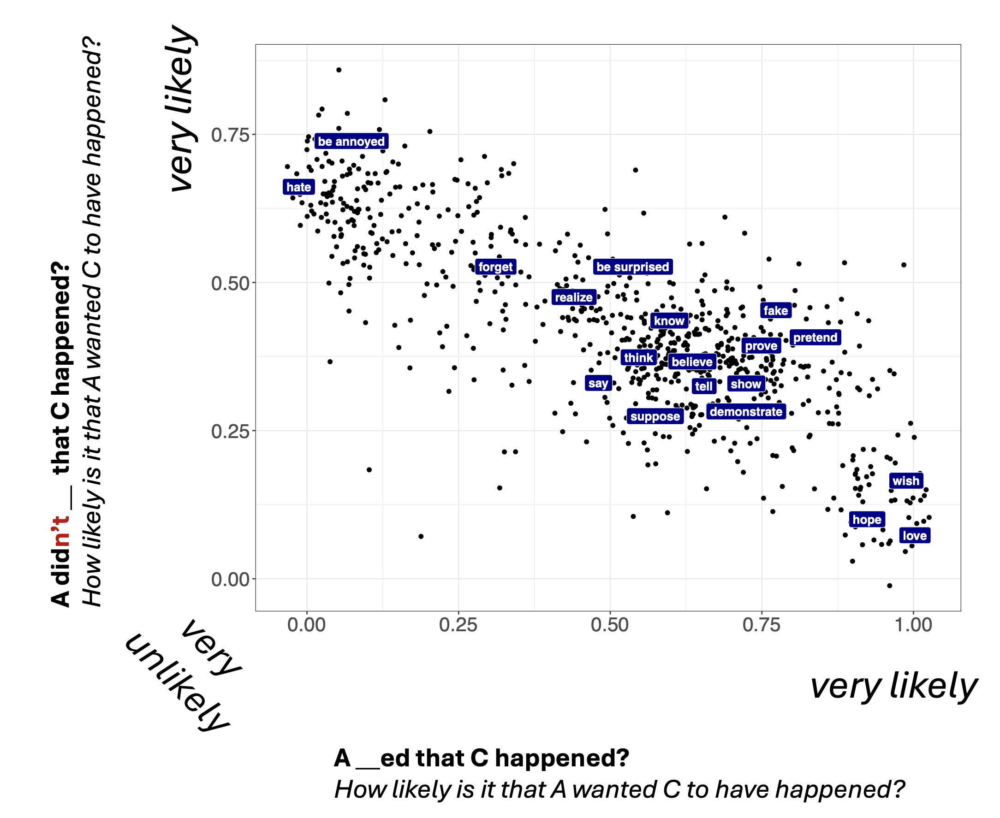
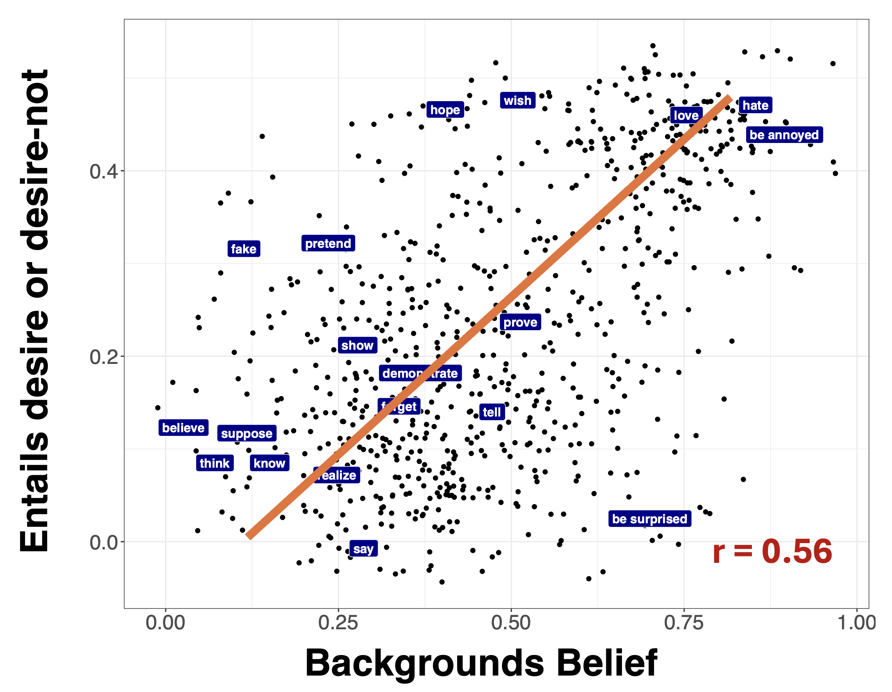

Probabilistic dynamic semantics
\[ \newcommand{\expr}[3]{\begin{array}{c} #1 \\ \bbox[lightblue,5px]{#2} \end{array} ⊢ #3} \newcommand{\ct}[1]{\bbox[font-size: 0.8em]{\mathsf{#1}}} \newcommand{\updct}[1]{\ct{upd\_#1}} \newcommand{\abbr}[1]{\bbox[transform: scale(0.95)]{\mathtt{#1}}} \newcommand{\pure}[1]{\bbox[border: 1px solid orange]{\bbox[border: 4px solid transparent]{#1}}} \newcommand{\return}[1]{\bbox[border: 1px solid black]{\bbox[border: 4px solid transparent]{#1}}} \def\P{\mathtt{P}} \def\Q{\mathtt{Q}} \def\True{\ct{T}} \def\False{\ct{F}} \def\ite{\ct{if\_then\_else}} \def\Do{\abbr{do}} \]
Background
Who might benefit from this course?
- People who have a semantics background and want to see how experimental methodologies for studying meaning might serve their goals.
- People who have a computational cog sci or experimental background and want to see how their approach might connect up with semantic theory.
Some papers this course is based on
A couple resources
- Course notes: https://juliangrove.github.io/nasslli-2025/
- Some code: https://juliangrove.github.io/pds/
The bridge from theory to data
Semantic theory has achieved remarkable success in characterizing compositional structure of meaning
The opportunity: Connect elegant formal theories to messy, gradient patterns from large-scale experiments
The goal: Maintain theoretical insights while extending to account for empirical richness
Probabilistic Dynamic Semantics as systematic bridge
Semantic theory’s success
Elegant formal systems capturing how complex meanings arise from systematic combination
- Decades of careful theoretical work
- Explains acceptability and inference judgments
- Compositional analyses via Montagovian methods
The challenge
How to test theoretical predictions at unprecedented scale while maintaining formal rigor?
Dynamic semantics
- Some linguist walked in. They gave a lecture.
Popular idea
Many frameworks for dynamic semantics model sentence meanings as maps from input states to sets of output states (e.g., Groenendijk and Stokhof 1991; Muskens 1996, i.a.).
- 1st sentence: \(λs.\{ x{::}s^{\prime} ∣ s^{\prime} = s ∧ \ct{ling}(x) ∧ \ct{walk}(x)\}\)
- 2nd sentence: \(λs.\{ s^{\prime} ∣ s^{\prime} = s ∧ \ct{lecture}(\ct{sel}(s))\}\)
Formal pragmatics
Much work has built on these ideas by enriching the notion of a state to countenance broader aspects of discourse structure.
Besides entities for anaphora:
- Common grounds (Stalnaker 1978, et seq.).
- Questions under discussion (QUDs, Roberts 2012; Ginzburg 1996).
- Contexts combining these and other structures (Farkas and Bruce 2010).
Enriched states: central to PDS.
Standard methodology
Acceptability judgments: assess whether strings are well-formed in context (Chomsky 1957; see Schütze 2016)
Example: island effects (Ross 1967; see Sprouse and Villata 2021)
- What would you like with your coffee? ✓
- #What would you like and your coffee? ✗
Standard methodology
Inference judgments: assess relationships between strings (see Davis and Gillon 2004 and references therein)
Example: factivity (see White 2019 and references therein)
- Jo {loves, doesn’t love} that Mo left. ⟹ Mo left.
Observational adequacy
Core desideratum: predict acceptability and inference patterns for any string (Chomsky 1964)
- Requires mapping vocabulary to abstractions predicting judgments parsimoniously
- Abstractions: discrete or continuous, simple or richly structured
Observational adequacy
Example:
- love, hate, be surprised, know share properties
- Inferences survive under negation/questioning (Kiparsky and Kiparsky 1970; cf. Karttunen 1971)
- Leads to positing shared properties, such as factivity
Descriptive adequacy
Core desideratum: capturing data “in terms of significant generalizations that express underlying regularities” (Chomsky 1964, 63)
Two approaches:
- Analysis-driven: Start with observationally adequate analyses, extract constraints (Chomsky 1973)
- Hypothesis-driven: Begin with constrained formalisms, test empirical coverage (Stabler 1997)
PDS adopts hypothesis-driven approach for semantics
Our approach
Probabilistic Dynamic Semantics aims to:
- Provide a relatively unconstrained formalism
- State testable hypotheses about distribution of judgments
- Test hypotheses using behavioral data
Key innovation
Delineate phenomena through representational constraints while enabling quantitative evaluation
Standard methods
Profound insights achieved:
- Semantic composition
- Scope phenomena
- Discourse dynamics
Standard methods
Natural boundaries:
- How well do generalizations from 5-10 predicates extend to thousands?
- What factors beyond semantic knowledge influence judgments?
- How does abstract knowledge produce concrete behavioral responses?
Experimental semantics and pragmatics
Methodologies like inference judgment tasks study larger lexical areas
Existing challenges:
- Unclear how modeling constructs relate to semantic theory
- What lexical properties are implicated?
- How do they interact with language-external factors?
The gradience question: What theoretical constructs underlie distributions of judgments?
The experimental turn
Experimental semantics brings behavioral experimentation to meaning questions
Scaling semantic investigation
- Traditional: handful of predicates
- Experimental: entire lexical domains
MegaAttitude project example
Large-scale investigation of clause-embedding predicates (White and Rawlins 2016, 2018, 2020; White et al. 2018; An and White 2020; Moon and White 2020; Kane, Gantt, and White 2022)
- Hundreds of predicates
- Multiple contexts and inference types
- Reveals subtle patterns difficult to see traditionally
Teasing apart contributing factors
Multiple factors influence inference judgments:
- Semantic knowledge: core meanings of expressions
- World knowledge: prior beliefs about plausibility (Degen and Tonhauser 2021 among others)
- Contextual factors: discourse context and QUD (Simons et al. 2017 among others)
Teasing apart contributing factors
- Individual differences: variation in interpretation
- Response strategies: how participants use rating scales
These are windows into cognitive processes, not confounds!
Making linking hypotheses explicit
Experimental approaches force explicit theorizing about (Jasbi, Waldon, and Degen 2019; Waldon and Degen 2020; Phillips et al. 2021)
- Link between semantic representations and behavioral responses
- What cognitive processes produce judgments?
- How do abstract representations map onto scale responses?
Key insight: Different linking hypotheses → different predictions about response patterns
We can’t ignore how representations map onto task responses
Understanding gradience
Striking finding: Pervasive gradient judgments
- Even where theory assumes categorical distinctions
- Examples: gradable adjectives (expected) vs. factivity (puzzling)
Understanding gradience crucial for connecting semantics to behavioral data
Examples of unexpected gradience
Large-scale datasets reveal gradience where theory might predict sharper distinctions (White and Rawlins 2018)

Deriving measures from gradience
To study relationships between properties, we need to derive measures

Relating gradient measures
Example: Factivity vs. Neg-raising
Neg-raising: Predicates licensing inferences like:
- Jo doesn’t think that Mo left.
- Jo thinks that Mo didn’t leave.
Expectation: Factives are not neg-raisers
Testing predictions with gradient data
MegaNegRaising dataset (An and White 2020)

Beliefs v. Desires
Proposed Generalization: Predicates that trigger both belief and desire inferences background the belief component (Anand and Hacquard 2014)
Belief Inferences
Measure of belief inferences from MegaIntensionality dataset (Kane, Gantt, and White 2022)

Desire Inferences
Measure of desire inferences from MegaIntensionality dataset (Kane, Gantt, and White 2022)

Relating belief and desire inferences

Key takeaways about gradience
- Gradience is pervasive - even where theory assumes categories
- Relationships vary - some clean trade-offs, others noisy correlations
- Need new theoretical tools - to understand continuous relationships
This motivates our taxonomy of uncertainty types…
A taxonomy of uncertainty
Two fundamental types producing gradience:
Sources of Gradience
├── Resolved (Type-Level) Uncertainty
│ ├── Ambiguity
│ │ ├── Lexical (e.g., "run" = locomote vs. manage)
│ │ ├── Syntactic (e.g., attachment ambiguities)
│ │ └── Semantic (e.g., scope ambiguities)
│ └── Discourse Status
│ └── QUD (Question Under Discussion)
└── Unresolved (Token-Level) Uncertainty
├── Vagueness (e.g., height threshold for "tall")
├── World knowledge (e.g., likelihood of facts)
└── Task effects
├── Response strategies
└── Response errorResolved uncertainty
Multiple discrete possibilities—speakers choose among interpretations
Example: “My uncle is running the race”
- run = locomotion or management?
- “How likely is it that my uncle has good managerial skills?”
- Locomotion interpretation → ~0.2
- Management interpretation → ~0.8
- Population average → ~0.5 (mixture of discrete interpretations)
Uncertainty “resolved” because once interpretation fixed, inference follows determinately
Unresolved uncertainty
Persists even after fixing all ambiguities
Example: “My uncle is tall”
- No ambiguity about tall’s meaning
- Speakers uncertain about height threshold
- Classic vagueness—inherently gradient application (Fine 1975; Graff 2000; Christopher Kennedy 2007; Rooij 2011; Sorensen 2023)
World knowledge: even knowing someone runs races, uncertainty about speed, endurance, etc. remains
Why this distinction matters
Type of uncertainty has profound implications:
- Resolved uncertainty → discrete representations with probabilistic selection
- Unresolved uncertainty → gradient representations or probabilistic reasoning within fixed meanings
Different phenomena may involve different types:
- Vagueness: unresolved (inherently uncertain application)
- Factivity: puzzling—resolved ambiguity or unresolved projection?
Case studies: Testing theory at scale
Two case studies exemplifying different framework aspects:
Case Study 1: Vagueness and gradable adjectives
- Ideal starting point—everyone agrees on gradient uncertainty
- tall, expensive, old lack sharp boundaries
Case Study 2: Factivity and projection
- Traditional theory treats as discrete
- Experimental data reveals pervasive gradience
- A theoretical puzzle
Case Study 1: Vagueness
Vague predicates lack sharp boundaries (Lakoff 1973; Sadock 1977; Lasersohn 1999; Krifka 2007; Solt 2015)
Everyone agrees they involve gradient uncertainty
Makes vagueness ideal for demonstrating PDS framework
Case Study 1: Vagueness
Degree-based theories long recognized gradience (Klein 1980; Bierwisch 1989; Kamp 1975; Chris Kennedy 1999; Christopher Kennedy and McNally 2005; Christopher Kennedy 2007; Barker 2002)
Analysis: tall is true of \(x\) if height(\(x\)) \(≥ d_{\text{tall}}\)(context) - Threshold varies with context - Gradient judgments even within fixed context
Case Study 1: Vagueness
PDS can:
- Maintain compositional degree-based analysis
- Add probability distributions over thresholds
- Model context shifts
- Link distributions to slider responses
Makes vagueness ideal for demonstrating framework
Case Study 1: Vagueness
Recent work reveals additional complexity:
- Relative adjectives (tall, wide): maximum gradience
- Absolute adjectives (clean, dry): different threshold distributions
- Minimum vs. maximum standard: asymmetric patterns
Case Study 1: Integration with models
PDS synthesizes and compares these approaches
Both support and refine formal theories
How?
Case Study 2: Factivity
Traditional theory: predicates either trigger presuppositions or don’t (Kiparsky and Kiparsky 1970; Karttunen 1971)
Example: love appears factive
- Jo loves that Mo left. ⟹ Mo left.
- Jo doesn’t love that Mo left. ⟹ Mo left.
- Does Jo love that Mo left? ⟹ Mo left.
Case Study 2: Factivity - Definition
A predicate is factive if it triggers inferences about its complement that project through entailment-canceling operators
Inference about complement truth survives:
- Negation
- Questions
- Other embeddings
Case Study 2: Factivity
White and Rawlins (2018) and Degen and Tonhauser (2022) found continuous variation:
- No clear line between factive and non-factive predicates
- Mean projection ratings vary continuously
- pretend (lowest) to be annoyed (highest)
Case Study 2: Factivity
Factivity: Fundamental Discreteness
Hypothesis 1: Factivity is discrete; gradience arises from:
- Multiple predicate senses (factive and non-factive variants)
- Structural ambiguity affecting projection (Varlokosta 1994; Giannakidou 1998, 1999, 2009; Roussou 2010; Farudi 2007; Abrusán 2011; Kastner 2015; Ozyildiz 2017)
- Contextual variation in whether complements are at-issue (Simons et al. 2017; Roberts and Simons 2024; Qing, Goodman, and Lassiter 2016)
Factivity: Fundamental Gradience
Hypothesis 2: No discrete property exists
- Gradient degrees of complement truth support
- Continuous variation reflects semantic reality (Tonhauser, Beaver, and Degen 2018)
Factivity: Testing both hypotheses
- PDS enables testing both hypotheses against fine-grained response distributions
- Not just means, but entire patterns including multimodality
Factivity: Testing paradigms
Various experimental paradigms:
Theoretical challenges from gradience
The gradience poses challenges (Simons 2007; Simons et al. 2010, 2017; Tonhauser, Beaver, and Degen 2018)
Key questions:
- Is the gradience fundamental or derived?
- What mechanisms produce continuous variation?
- How do semantic and pragmatic factors interact?
What PDS provides
A possible discourse:
- Prior knowledge: Zoe is a math major
- Some predicate: X discovered that Zoe calculated the tip
- Question: How likely is it that Zoe calculated the tip?
The need for new frameworks
Case studies illustrate four key requirements:
1. Maintain Compositionality
- Derive meanings compositionally
- Preserve formal semantic insights
- Can’t abandon compositionality for gradience
2. Model Uncertainty Explicitly
- Represent resolved and unresolved uncertainty
- Show interaction during interpretation
Framework requirements
3. Make Linking Hypotheses Precise
- Explicit theories: representation → behavior
- What processes between meaning and slider?
4. Enable Quantitative Evaluation
- Testable predictions about distributions
- Compare theories using standard metrics
Moving forward
Existing computational approaches (e.g., RSA) bridge formal semantics with probabilistic reasoning (Frank and Goodman 2012; Goodman and Stuhlmüller 2013)
Challenges with existing approaches:
- Difficulty maintaining modularity
- Often blur semantics/pragmatics distinction
- Connection to traditional theory somewhat opaque
Motivating PDS
This motivates Probabilistic Dynamic Semantics:
- Preserves semantic insights (the “semantics” part)
- Adds probabilistic tools for gradient data (the “probabilistic” part)
- Models experimental tasks as complex discourses (the “dynamic” part)
- Maintains theoretical commitments while enabling tests
PDS provides the framework we need to bridge theory and data
Interim summary
- Traditional semantics achieved remarkable success
- Experimental methods open new opportunities
- Gradience poses theoretical challenges
- Need frameworks bridging theory and data
Next: How Rational Speech Act models attempt this bridge, and what PDS can add
A theoretically-oriented approach
R ational S peech A ct
Models
(Frank and Goodman 2012; Goodman and Frank 2016, among many others).
See Degen (2023) for a recent overview of RSA and associated literature.
Two kinds of models
- Listener models
- Speaker models
Listener models
\(L_{0}\)
\[ \begin{aligned} P_{L_0}(w | u) &∝ \begin{cases} P_{L_0}(w) & u^w = \mathtt{T} \\ 0 & u^w = \mathtt{F} \end{cases} \end{aligned} \]
- \(u\) is an utterance
- \(w\) is a meaning (e.g., state of the world to be communicated)
- \(L_{0}\) is just filtering the prior distribution over \(w\)
Listener models
\(L_{i} (i > 0)\)
\[ \begin{aligned} P_{L_i}(w | u) &= \frac{P_{L_i}(u | w) * P_{L_i}(w)}{∑_{w^\prime}P_{L_i}(u | w^\prime) * P_{L_i}(w^\prime)} \end{aligned} \]
Bayes’ Theorem
- Posterior probability (given some observation) is proportional to prior probability, multiplied by the likelihood of the observation.
- Derivable from probability axioms.
Listener models
\(L_{i} (i > 0)\)
\[ \begin{aligned} P_{L_i}(w | u) &= \frac{P_{L_i}(u | w) * P_{L_i}(w)}{∑_{w^\prime}P_{L_i}(u | w^\prime) * P_{L_i}(w^\prime)} \end{aligned} \]
- \(P_{L_{i}}(w) = P(w) \hspace{7cm}\) (prior over meanings)
- \(P_{L_{i}}(u ∣ w) = P_{S_{i}}(u ∣ w) \hspace{2cm}\) (utterance probability \(∣ w\))
Listener models
\(L_{i} (i > 0)\)
\[ \begin{aligned} P_{L_i}(w | u) &= \frac{P_{S_{i}}(u | w) * P(w)}{∑_{w^\prime}P_{S_{i}}(u | w^\prime) * P(w^\prime)} \end{aligned} \]
- \(P_{L_{i}}(w) = P(w) \hspace{7cm}\) (prior over meanings)
- \(P_{L_{i}}(u ∣ w) = P_{S_{i}}(u ∣ w) \hspace{2cm}\) (utterance probability \(∣ w\))
Listener models
\(L_{i} (i > 0)\)
\[ \begin{aligned} P_{L_i}(w | u) &= \frac{P_{S_{i}}(u | w) * P(w)}{∑_{w^\prime}P_{S_{i}}(u | w^\prime) * P(w^\prime)} \end{aligned} \]
Intuition
- The most probable meaning is the one the speaker would’ve most likely chosen that utterance for to get you to infer it.
- Grice (1975)
Cookies example
- \(u = \textit{Jo ate five cookies}\)
- \(n_{\textit{cookies}} ≥ 5\) (literal meaning)
Three components:
- A literal listener \(L_{0}\): \(u ↦ P(w ∣ u)\)
- A pragmatic speaker \(S_{1}\): \(w ↦ P(u ∣ w)\)
- A pragmatic listener \(L_{1}\): \(u ↦ P(w ∣ u)\)
The literal listener \(L_{0}\)
\[
P_{L_{0}}(w ∣ u) ∝ 𝟙(w ≥ n) × P (w)
\]
| \(w =\) | 5 | 6 | 7 |
|---|---|---|---|
| \(u = \textit{Jo ate 5 cookies}\) | 1/3 | 1/3 | 1/3 |
| \(u = \textit{Jo ate 6 cookies}\) | 0 | 1/2 | 1/2 |
| \(u = \textit{Jo ate 7 cookies}\) | 0 | 0 | 1 |
The pragmatic speaker \(S_{0}\)
\[
P_{S_{1}}(u ∣ w) ∝ \frac{P_{L_{0}}(w ∣ u)^{α}}{e^{α × C(u)}}
\]
Assume: \(α = 4\), and \(C(u)\) is constant.
| \(w =\) | 5 | 6 | 7 |
|---|---|---|---|
| \(u = \textit{Jo ate 5 cookies}\) | 1 | 0.16 | 0.01 |
| \(u = \textit{Jo ate 6 cookies}\) | 0 | 0.84 | 0.06 |
| \(u = \textit{Jo ate 7 cookies}\) | 0 | 0 | 0.93 |
The pragmatic listener \(L_{1}\)
\[
P_{L_{1}}(w ∣ u) ∝ P_{S_{1}}(u ∣ w) × P (w)
\]
| \(w =\) | 5 | 6 | 7 |
|---|---|---|---|
| \(u = \textit{Jo ate 5 cookies}\) | 0.85 | 0.14 | 0.01 |
| \(u = \textit{Jo ate 6 cookies}\) | 0 | 0.93 | 0.07 |
| \(u = \textit{Jo ate 7 cookies}\) | 0 | 0 | 1 |
RSA
- Modularity: aims to distinguish semantic and pragmatic causes of inference behavior:
- literal listener vs. pragmatic listener/speaker
Challenges
- Not super clear what role compositionality can play:
- The theory of L0 must come from outside.
- Models typically operate at the sentence level…
- how do pragmatic effects of individual expressions determine the global pragmatic effect of an utterance?
Setting the stage
PDS has three important properties:
- compositionality: models of linguistic datasets are derived compositionally from semantic grammar fragments.
- modularity: factors affecting inference judgments may be theorized about independently and combined.
- abstraction: models of meaning and inference should be statable abstractly, without reference to implementation.
Compositionality for models
What could it mean for models of linguistic datasets to be compositional?
Basic strategy:
- build the distributional assumptions associated with a mixed-effects model into the semantics…
- when basic meanings compose, so do these assumptions.
Distributions in the semantics
What do they represent?
- Uncertainty. I.e., about what inferences are licensed.
Traditional view of meaning: programs that compute values.
- \(\textit{jo laughs} = \textit{laughs} ▹ \textit{jo} = laughs(j)\)
Probabilistic view: instead, compute probability distributions.
- \(\textit{jo laughs} = \textit{laughs} ▹ \textit{jo} =\) \({\small\begin{array}[t]{l} j ∼ JoDistr \\ laugh ∼ LaughDistr \\ Return (laugh(j)) \end{array}}\)
Modularity
Factors affecting inference judgments can be theorized about independently and combined:
- lexical and compositional semantics
- world knowledge
- response behavior: how does someone use a testing instrument (e.g., slider scale)?
An upshot: PDS can have different uses.
- E.g., swap out a model of response behavior for a model of likely utterances (perhaps, \(S_{1}\)).
Abstraction
We should be able to state models of inference judgment data abstractly:
- describing probability distributions,
- not worrying how they are computed.
Consequence: separation between theory and model.
- Allows flexibility about implementation.
- Allows the theory to be simpler.
- Allows seamless integration between formal semantics and probabilistic semantics. (More tomorrow!)
Haskell
- Learn you a Haskell: https://learnyouahaskell.com/
References
Probabilistic dynamic semantics